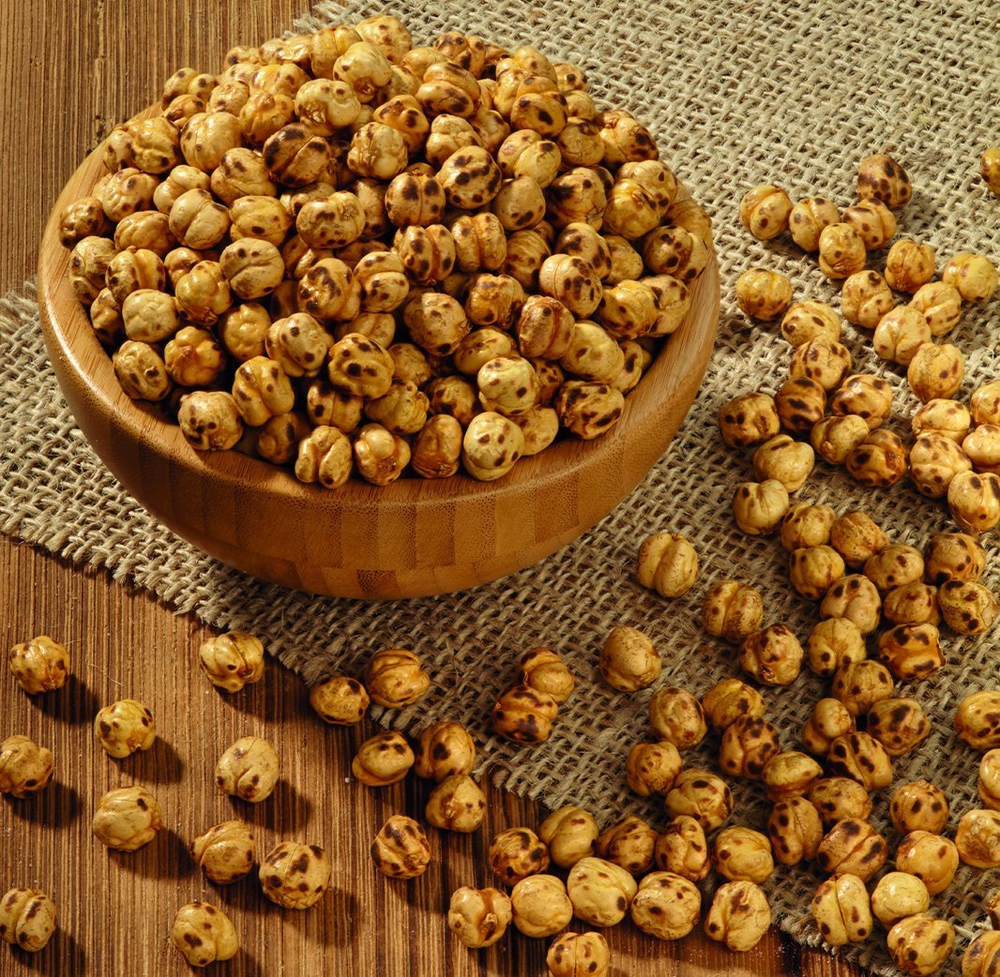

Kavrulmuş leblebi özellikle kemik gelişimi için fayda sağlar. Ayrıca kilo vermek isteyenler içinde ideal bir bir besindir. Uzun süre tok kalmayı sağlar. Aynı zamanda vücut enerjisini de yüksek tutar. Kavrulmuş leblebi lif bakımından zengin olduğundan mide ve bağırsakların fonksiyonlarını düzenler. Dozunda tüketildiğinde metabolizmayı düzenler. Ancak aşırıya kaçıldığında bazılarında kabızlığa bazılarında ise ishale neden olur.
